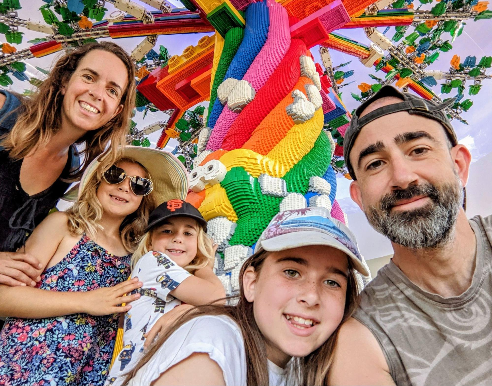

NOSTRansact - extensible Nostr platform for Bitcoin commerce
A Funding Proposal
Executive Summary:
As a seasoned software engineer with over two decades of experience building platforms and SaaS products, I am seeking funding (as a form of community sponsorship) to establish a single-person company dedicated to creating (and then maintaining) an open-source, commercial-grade, scalable, and extensible Nostr relay with an intuitive web interface which is fully integrated with the Bitcoin Lightning network. The long-term vision is to develop a suite of open Nostr-native applications that contribute to accelerating the development of a Bitcoin circular economy, promote decentralization, and foster the growth of sustainable, revenue-generating businesses built on top of Bitcoin technology.
Funding Requirements:
To bring this vision to life, I am seeking funding of £250,000 (or $300k or 12BTC), which will be allocated as follows:
- £100,000 per year for two years, covering my salary as the sole employee
- This would allow me to quit my job working for Velo Payments and focus 40+ hours per week on this project
- £50,000 for operational costs associated with building a sustainable revenue stream:
- Outsourcing some functions which are not my core competencies, e.g.:
- Hosting costs associated with running high availability services
- Domain registrations
I’m asking for sponsorship rather than investment because I would strongly prefer to perform this work as a sovereign individual acting on behalf of the Bitcoin community. This seems more in keeping with our shared philosophy. I need your funds to enable my professional contribution.
The ROI for this project will be the open-source components that are shared with the community and that will form a foundational building block on which other BTC adjacent companies can be built or extended.
The purpose of building a sustainable revenue stream is so that I can continue to maintain the NOSTRansact platform, and contribute in other meaningful ways to the Bitcoin ecosystem, after the initial 2 year period has ended and without further sponsorship.
Project Phases:
- Development of an open source, secure, vertically scalable Nostr relay supporting the following features:
- Fully compliant with the Nostr protocol (All relevant NIPS)
- Support up to 10k concurrent users on a single host
- Authenticated Users (subscribe to use)
- Pluggable subscription integrations, with initial modules to support:
- Admin can gift subscriptions to specific users
- Stripe module to support fiat subs
- LN Payments (phase 2)
- A simple to use web UI that supports
- Desktop and Mobile
- Sign up of new users
- Nostr Connect/Alby for Auth and delegation of signing etc
- Custom themes for whitelabeling
- Easily deployable to an Umbrel server or via Docker
- Excellent Documentation
- A GraphQL Query interface for building web/mobile apps more easily
- Nostr based chat-ops (admin/reporting via Nostr DM’s)
- Subscriber upload of images, video, audio
- With quota (can also be removed/deleted)
- Ideally added as a NIP
- Generates publicly available links but does not allow listing/discovery
- Pluggable messaging integrations (e.g. pub/sub) to act as a gateway into external business processes to support things like chat-ops, chatbots, ChatGPT plugins, automation (e.g. ifttt/zapier), analytics etc
- Full integration of the relay with the Lightning Network (LN) to support subscriptions and also custodied wallets on behalf of each subscriber. This would allow any relay operator to also provide a BTC checking account to each subscriber. This integration would provide the following features:
- Connect to a local or remote LN node
- Pay for subscription via external LN (or local wallet)
- Hosted wallet per subscriber
- Extended UI to support basic banking features
- Balance
- Statement
- Deposit
- Withdrawal to other LN or on-chain BTC
- Configurable withdrawal fee
- Nostr notifications of credits and debits
- Support Zaps (NIP-57) via chat-ops
- Auto Save - e.g. 5pm Friday all/some accrued revenue is pushed out to:
- external LN wallet
- on-chain wallet/cold storage
- minimise custodied funds
- Development of the Nostr Business Directory (aka Orange Pages?). This would be our first open Nostr app. It would consist of a set of new Nostr message types that would allow subscribers to create business profiles to advertise their services to the Nostr community and also for patrons of those services to register feedback in the form of reviews. This app would support:
- Markdown based business profiles using uploaded images/video/audio
- Location tagged businesses
- Integrated Zaps for payment request/invoice
- Extended UI to add/edit business profiles
- Pluggable 3rd party directory updates e.g. profiles automatically pushed to:
- Aggregated search host
- Google/Bing/DuckDuckGo search (via robots.txt)
- Google maps, etc
- Chat ops to send zap request
- @madbitcoin.net request zap of 400k sats from su@getalby.com
- Automated chat-ops to ask patrons for a small review following payment
- Public free-text web search via the web GUI to allow anyone to find these businesses and interact with them (via Nostr or public contact form)
- Nostr search for businesses - @madbitcoin.net: find me a plumber
- Ideally elevated to a full NIP so that the Nostr Business Directory could be supported by all Nostr clients and relays natively
- Building a commercial business on top of the above open-source components:
- Start building a brand
- Host our own relays for various localities (e.g. London, Miami, Madeira etc)
- Leverage first-mover advantage
- Dogfood our own commerce platform
- Build a directory of NOSTRansact relays
- Build an aggregate search site for the Nostr Business Directory (think Google Adwords)
- Working with the Nostr community to build other open Nostr-native commercial leaning apps and have them rolled into the NIPS process so they can be supported by all Nostr clients/relays. Possible future apps include open versions of the following:
- Upwork - Freelance job postings, reviews, (escrowed payments?)
- FB Marketplace - Ad listings, member feedback
- Etsy - storefront with inventory, price lists and ordering
- Uber - Ride hailing
- Uber Eats - Food delivery, menu’s, ordering
- Tool sharing community library - BTC collateral
- All the things…
- Support internationalisation of the relay platform including some or all of the following:
- Translation of all documentation
- User language(s) added to Nostr as a NIP
- Auto-translation of messages via AI (e.g. ChatGPT API)
- Support TOR entry points for all functionality to enable operation in hostile jurisdictions
- Support Fedimint for community owned & operated relays
- Re-working the relay architecture to support large commercial organisations:
- Horizontal scale out to enable it to support +100k concurrent users
- Deploy to cloud/Kubernetes etc
- Pluggable database backend
Illustration of use:
Imagine the following scenario. Fred is a plumber living and working in Madeira. He’s a no-coiner but he’s been talking to a few people and keeps hearing about Bitcoin. He decides he’d like to advertise his business to the up and coming Bitcoin community. He does a google search for “bitcoin madeira'' and one of the first results is madbitcoin.net which touts itself as a business directory for Bitcoin friendly businesses. He visits the site and is able to sign up for a month's free trial while also using the Stripe integration to commit to paying 10 euros per month after the first month. He is taken through the easy onboarding process which includes uploading his business logo and building his business info page. He now has a Nostr identity - fredtheplumber@madbitcoin.net - and can receive LN payments via that same address. He now has a web presence at https://madbitcoin.net/dir/fredtheplumber that is indexed by Google, Bing etc and appears on Google Maps and anyone can get in touch with him via either Nostr or the web based contact form (which will forward to Nostr). Clients can pay Fred via zaps or any LN enabled wallet. Fred then purchases a hardware wallet and can set up Auto Save so that any BTC revenue over and above a specified limit is sent out of his checking account and safely into his savings account every week.
Purpose:
There are 3 primary purposes to this endeavor:
- Contribute a significant open-source commerce platform to the Bitcoin and Nostr ecosystem that can be leveraged by many different types of businesses to generate value in many different ways.
- Contribute a framework for building open Nostr applications and prototype the process of how they can be folded back into the official Nostr protocol so that they can appear in any client and be supported by any relay.
- Bootstrap a sustainable business for myself within the 2 year period so that I don’t have to look for any further external funding and can continue to improve the open source relay and open nostr apps moving into the future.
About Me:
Adam Chesney
Bristol, UK
ajchesney@gmail.com
20+ years building innovative software products and services in agile environments. At my best when distilling complex business requirements into a clear, simple and lean software architecture. A good communicator, interested in the wider business environment and able to offer strategic insight as well as technical leadership. A passion for working with smart (and funny) people to engineer great products.
Passionate about how Bitcoin and Nostr can make the world a better place (for the kids!). HODLing BTC since 2017. Fix the money, fix the world.
Linked in: https://www.linkedin.com/in/adamchesney
Twitter: https://twitter.com/TiGz_UK
Github: https://github.com/TiGz/arango-quarkus-nostr-relay
(I have started this project in my free time already but with a full time job and 3 kids I just can’t dedicate enough time to do it justice)
Blog post related to the proposed architecture: https://www.incept5.com/blog/going-gaga-for-rad
Please reach out by email at ajchesney@gmail.com if you’d like to discuss further.
Many thanks.
Copyright Adam Chesney 2023
P.S. this is us at Legoland Windsor:
